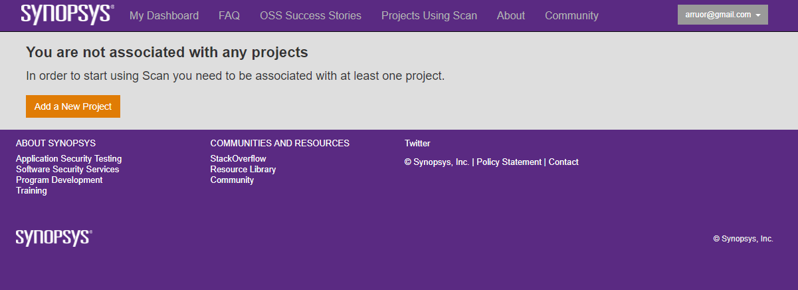
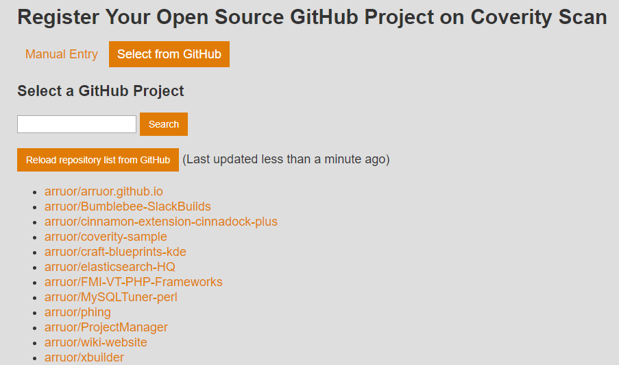
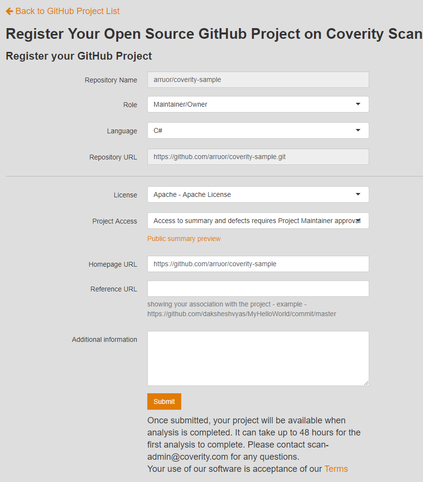
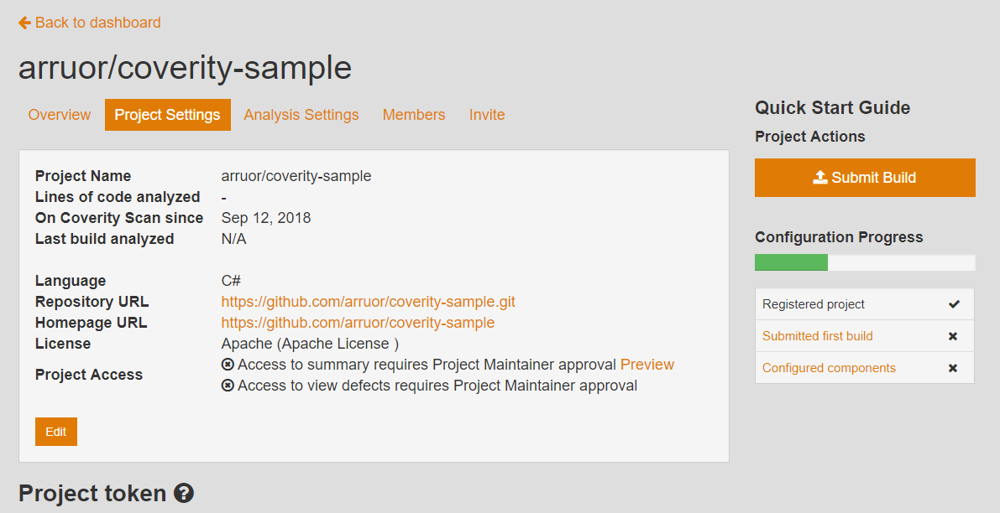
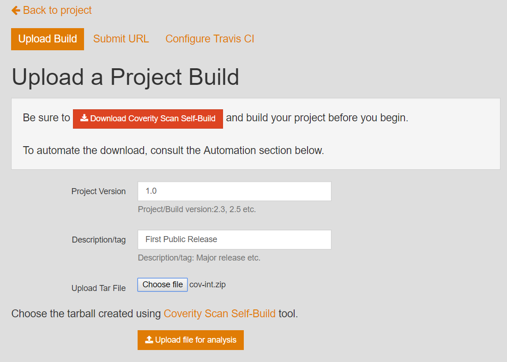
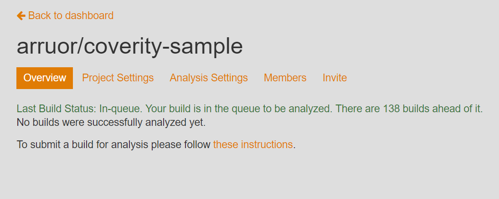
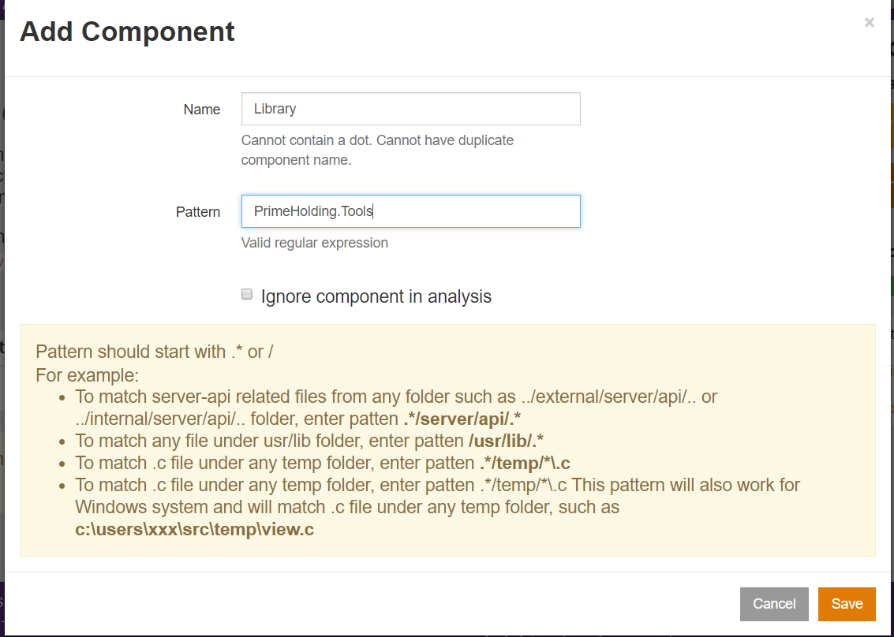

Статичен анализ на кода с платформата Coverity
Съдържание
- Въведение
- Регистрация и конфигуриране на проект
- Конфигуриране на услугата
- Тълкуване на резултата
- Q & A
Въведение
- Coverity Scan e уеб базирана услуга за статичен анализ на програмен код
- Има интеграция с Github и Travis CI
- Поддържа различни нива на статичен анализ
- Compiler warnings - проверява дали програмата е type safe
- Byte code анализ - идентифицира дефекти в intermediate код
- Source code анализ - генерира възможно най-точни резултати
Видове грешки (пропуски) разпознавани от Coverity Scan
- Resource leaks
- Database connection leaks
- Resource leaks
- Socker & Stream leaks
- Грешки при ползване на API
- Използване на вече освободени ресурси
- Null pointer dereferences
- Dereferences след проверка за null стойности
- Dereferences преди проверка за null стойности
- Dereferences при връщане на null стойности
- Проблеми при контролни конструкции (control flow)
- Допълнителен символ ‘;’ (best hide’n’seek champion since 1985 ;->)
- Сравнение на несъвместими типове
- Използване на ‘=’ вместо ‘==’
- Подозрителен код
- Copy / Paste грешки
- Значителни аномалии при indentation
- Разменени аргументи
- и други
Регистрирация и конфигуриране на услугата
Регистрация
- Регистрация на standalone акаунт
- Регистрация с Github акаунт (препоръчително)
Създаване на проект
- ИЗбираме бутон “Add a New Project”

- Избираме бутон “Reload repo list from GitHub”
- Избираме името на хранилището от GitHub, което съдържа изходния код на проекта за анализ

- Добавяме мета данни за проекта - Роля, Програмен език, Тип на лиценза и др.

- Избираме бутон “Submit build”
- По желание може да добавим интеграция с Travis CI

- Добавяме мета данни за build-а
- Версия на проекта
- Описание на проекта
- Път до архива съдържащ сурови данни от Coverity Scan Self-Build инструмента
- Инсталиране на Coverity Scan Self-Build инструмента и използване
- Инсталационен дистрибутив - Win64, C#, Win32, C#
- Разархивираме в директория по избор
- Добавяме bin/ директорията на инстримента към PATH променливата
- В директорията на проекта изпълняваме cov-build –dir cov-int msbuild /t:Rebuild
- Архивираме междинната директория (в примера с име cov-int)

- Преглед на статуса за новодобавения build

- Избираме линк “Configured Components” от страницата с информация за проекта (по желание)
- Добавяме необходимите компоненти за multi-project solution, ако е необходимо

- Резултатите са достъпни след 1-2 работни дни
Задачи за самостоятелна работа
- Конфигурирайте работното обркъжение за анализ на изходния код
- Стартирайте анализ за избран от вас проект или използвайте примерния код
- Анализирайте всички резултати от инструмента
- Идентифицирайте потенциални проблемни части на кода и планирайте промени за оптимизиране
- Планирайте рефакторинг на одобрените промени